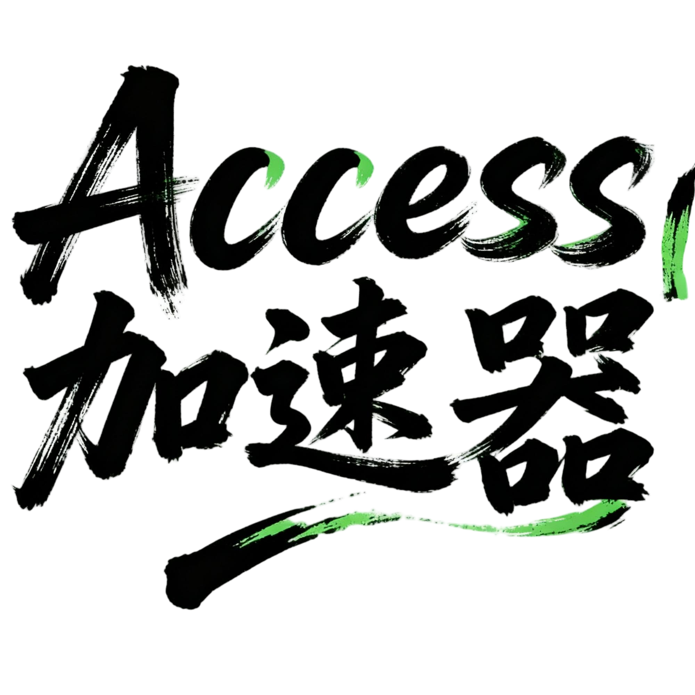
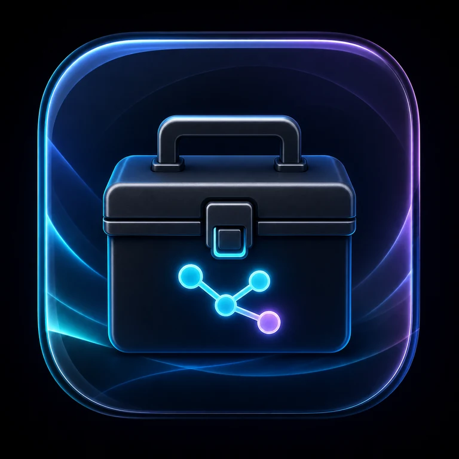

INTERNAL DIGITAL WORKSPACE
XACDURO-Navigation
为业务项目提供更便捷的数字化支持

Access-惠民保助手 惠民保项目数据填写与进展管理 Health Economics 正式工具 双坦精准治疗价值导航平台 双坦治疗价值分析与项目导航工具
XACDURO-Navigation 创新南中国粤桂湘大区数字化内部工具导航页INTERNAL DIGITAL WORKSPACE
为业务项目提供更便捷的数字化支持

Access-惠民保助手 惠民保项目数据填写与进展管理 Health Economics 正式工具 双坦精准治疗价值导航平台 双坦治疗价值分析与项目导航工具